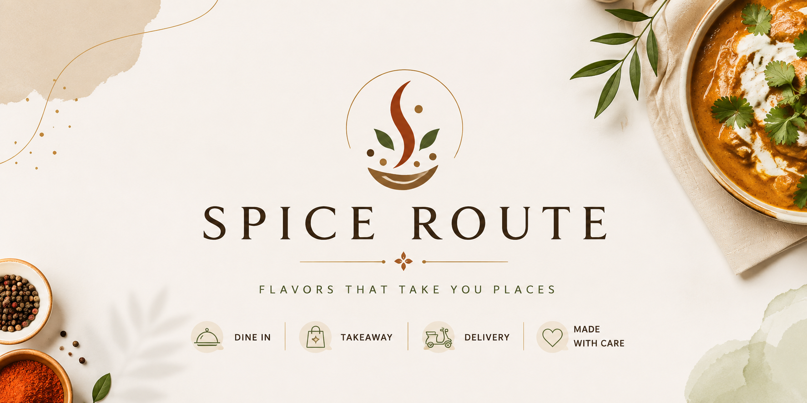

Tender chicken and aromatic basmati rice, cooked with authentic spices for a rich and flavorful experience.
Navigate using:

Spice Route brings the vibrant flavors of authentic Indian cuisine straight to your table. From sizzling tandoori classics to rich, slow-cooked curries. Whether you're craving a quick lunch or planning a family feast, we're here to make every meal memorable.
Tender chicken and aromatic basmati rice, cooked with authentic spices for a rich and flavorful experience.
Grilled chicken is seasoned and cooked to perfection, offering a delicious and healthy option.

Prawns cooked in a rich, aromatic curry infused with traditional spices and bold flavors.